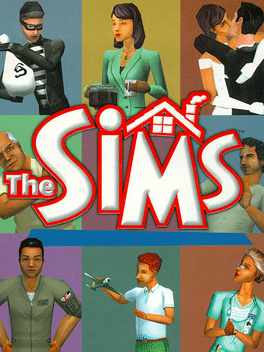

The Sims
(Game Development)
The Sims is a series of life simulation video games developed by Maxis and published by Electronic Arts. The franchise has sold nearly 200 million copies worldwide, and is one of the best-selling video game series of all time. It is also part of the larger Sim series, started by SimCity in 1989. The games in the Sims series are largely sandbox games, in that they lack any defined goals (except for some later expansion packs and console versions which introduced this gameplay style). The player creates virtual people called "Sims", places them in houses, and helps direct their moods and satisfy their desires. Players can either place their Sims in pre-constructed homes or build them themselves. Each successive expansion pack and game in the series augmented what the player could do with their Sims
